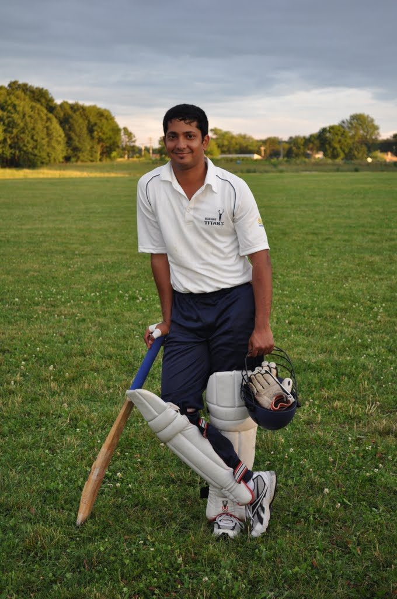

Abhijit Deshpande — engineer, cricketer, builder
Hello, I’m Abhijit. Husband and dad first; cricketer, coach and analyst; and a software engineer who writes CAD software for a living. This is my notebook.
Curiosity is the starting point. Building is the outcome.

From the crease to the analyst’s laptop
Player, coach, club organiser and performance analyst: four ways of looking at the same game.
Read the noteMore than a developer
-
Husband & father
Married to Nihira, a musician — which is how I came to build her website, one of the projects I'm proudest of. Also a dad, and a friend to many people I've met through all of the above.
nihiramusic.in -
Cricketer
Player, ICC Level 1 coach and performance analyst. I've worked as an analyst with the German and Luxembourg national teams, and set up a local club that has since reached the Bundesliga.
CricketIQ -
Engineer
I write CAD software for a living: geometry, C++ and code that has to last for years. In my own time I build with Python, the web and AI.
Projects -
Runner & writer
Outside work and cricket: running, music and writing. Longer essays go to Substack; shorter notes live on this site.
Substack (opens in a new tab)
Things I’ve been building
All projectsnihiramusic.in
A website for a musician that largely maintains itself: new videos and concerts appear automatically. Built in about four days, with me directing an AI development partner.
CricketIQ
Exploring cricket through ball-by-ball data, player profiles and analytical tools — the analyst's side of my cricket, in software.
VisaFlow
An early prototype that reads a passport and extracts its key fields — a first step towards a structured visa-application workflow.
“Build useful things. Understand how they work. Share what you learn.”
This site is a work in progress — much like the projects documented here.
Recent writing
All notesHusband and dad, before everything
This site lists projects, roles and experiments. The most important roles in my life don’t have a project page.
From the crease to the analyst’s laptop
Player, coach, club organiser and performance analyst: four ways of looking at the same game.
A career built on curves
From a master’s degree in computational geometry to writing CAD software, and why geometry has stayed at the centre.